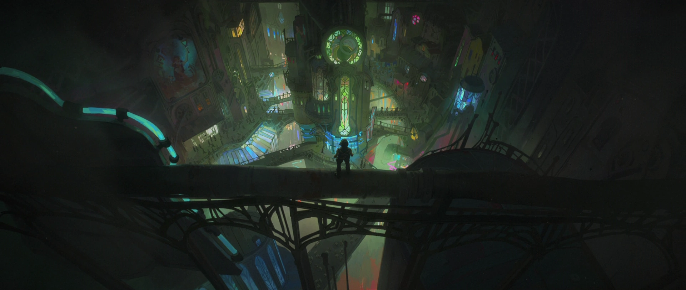

Piltover
Piltover, conocida como "la Ciudad del Progreso", es un centro de innovación tecnológica y comercio marítimo. Su riqueza y poder provienen de la tecnología Hextech, un avance revolucionario que utiliza cristales mágicos para canalizar energía. Los líderes de Piltover, como el Consejo, controlan la ciudad con un enfoque en la estabilidad y el progreso. Sin embargo, esta prosperidad viene a costa de Zaun, su ciudad hermana subterránea, cuyas clases trabajadoras son explotadas para sostener la riqueza de Piltover. Aunque se presenta como una utopía de progreso, Piltover enfrenta conflictos internos por los intereses políticos y las ambiciones personales de figuras como Jayce, Mel Medarda y Caitlyn. Su relación con Zaun está marcada por tensiones crecientes y un profundo desprecio hacia los zaunitas, lo que alimenta el resentimiento y las rebeliones.

Zaun
Zaun es una ciudad subterránea y oscura que vive a la sombra de Piltover. Conocida como "la Ciudad Baja", Zaun está marcada por la pobreza, la contaminación y la opresión. A pesar de estas condiciones, sus habitantes son resilientes y han desarrollado su propia forma de progreso, aunque menos refinada que la de Piltover. La llegada del químico Shimmer, introducido por Silco, trae poderes sobrehumanos a los oprimidos, pero también aumenta la dependencia y el caos. Zaun está habitada por genios como Viktor y Ekko, quienes buscan cambiar la ciudad, aunque con visiones opuestas. El resentimiento de Zaun hacia Piltover crece a medida que sufre explotación y desigualdad, alimentando una lucha por la independencia que amenaza con desatar una guerra abierta entre las dos ciudades.
